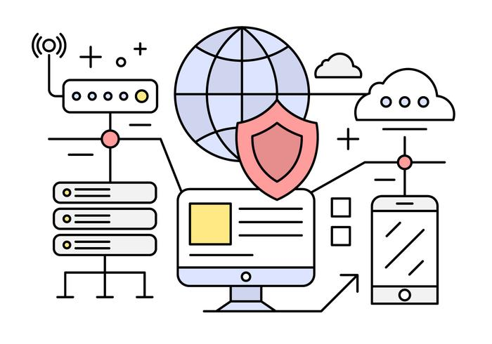
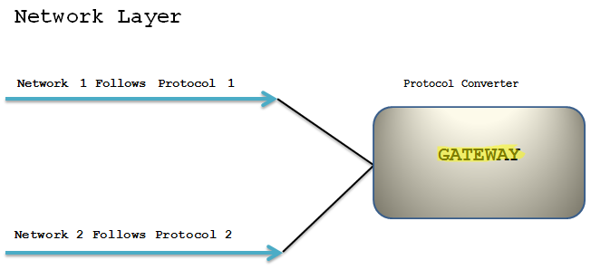
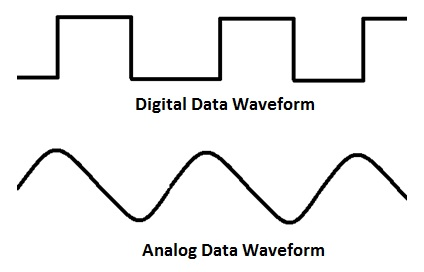

After reading the previous article, i hope you are little familiar with the concept of Networking.
Being a noob(x) ethical hacker, you should know how to build a network and defend it, so let's take a look at the hardware
Also, in this article we mentioned things like 'data link layer', 'physical layer', 'OSI', so don't worry :) we will talk about all that in the next article.
What are Networking Devices ?
Remember when we said "Devices are Networking", let's understand the Devices
Networking devices are physical devices that are required for communication and interaction between hardware on a computer network.
You see those big towers with a complete web of wires, ever wondered where those wires meet? Yes! you got it right, they all go through these networking devices.
Just as your PC won't work without a keyboard, monitor, etc or simply the hardware, same goes for a network
 Icon Vectors by Vecteezy
Let's take a look at these:
- Repeater
- Hub
- Bridge
- Router
- Switch
- Gateway
- Modem
1. Repeater
A repeater is an electronic device that amplifies the signal it receives i.e., it retransmits it at a higher level or higher power so that the signal can cover longer distances.
A repeater a 2 port device and operates at the Physical layer of OSI.
2. Hub
A centralized device that connects multiple devices in a single network. A hub also acts as a repeater. Hubs cannot filter data, so data packets are sent to all connected devices. Hubs operate at the Physical layer
Types of Hub- Active Hub: These are the hubs which have their own power supply and can clean, boost and relay the signal along with the network. It serves both as a repeater as well as wiring centre. These are used to extend the maximum distance between nodes.
- Passive Hub: These are the hubs which collect wiring from nodes and power supply from active hub. These hubs relay signals onto the network without cleaning and boosting them and can’t be used to extend the distance between nodes.
3. Bridge
A bridge is a repeater, with add on the functionality of filtering content by reading the MAC addresses of source and destination. It is also used for interconnecting two LANs working on the same protocol. It is a two port device and operates at Data Link Layer.

4. Switch
A switch is a multiport bridge with a buffer and a design that can boost its efficiency and performance.
It can work at the Data link layer or Network layer
Switches can be subject to distributed denial of service (DDoS) attacks; flood guards are used to prevent malicious traffic from bringing the switch to a halt. Switch port security is important, so be sure to secure switches: Disable all unused ports and use DHCP snooping, ARP inspection and MAC address filtering.
5. Routers
Routers help transmit packets to their destinations by charting a path through the sea of interconnected networking devices. It operates at the network layer. Routers normally connect LANs and WANs together and have a dynamically updating routing table based on which they make decisions on routing the data packets.
Routers are your first line of defense, and they must be configured to pass only traffic that is authorized by network administrators
6. Gateway
It is a passage to connect two networks together that may work upon different networking models. Gateways perform all of the functions of routers and more. In fact, a router with added translation functionality is a gateway.
7. Modem
Modem (modulator-demodulator) converts digital signal into analog and vice versa. The data stored on the computer is digital whereas a telephone line or cable wire can transmit only analog data.

The modulator converts digital data into analog data when the data is being sent by the computer. The demodulator converts analog data signals into digital data when it is being received by the computer.
Modems work on both the Physical and Data Link layers.
Conclusion
Having a solid understanding of the types of network devices available can help you design and build a network that is secure and works well. As a person interested in cybersecurity, you should carefully monitor your network devices and activity around them, so you can quickly spot hardware issues, configuration issues and attacks.
In the next article, we will covers the layers of the OSI model which we mentioned here and see how it all works....
;)